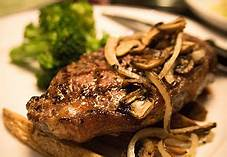
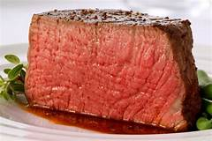
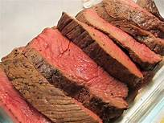

FILLET STEAK
is a boneless cut or slice of meat or fish. The fillet is often a prime ingredient in many cuisines, and many dishes call for a specific type of fillet as one of the ingredients.
STRIP STEAK R225
POTION STEAK R145
ROAST STEAK R135
